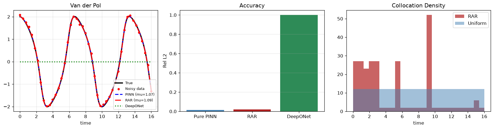

Recovering Nonlinear Damping from a Vibration Record
Many physical systems sustain oscillations by nonlinear energy exchange, injecting energy when amplitude is low, dissipating it when amplitude is high, and settling onto a stable limit cycle. The Van der Pol equation is the canonical second-order model of this behaviour:
The nonlinear damping parameter $\mu$ appears in cardiac pacemaker cell models, electronic oscillator circuits, pressure oscillation models in packed-bed reactors, and respiratory mechanics. Estimating $\mu$ from a measured time series, with noise, is the relevant inverse problem.
| $\mu$ | Oscillation character | PINN difficulty |
|---|---|---|
| 0.1 | Near-sinusoidal, gentle | Easy |
| 1.0 (this notebook) | Moderate nonlinearity, clean limit cycle | Tractable |
| 5.0 | Sharp relaxation oscillations | Spectral bias failure, see below |

Fig. A — Van der Pol oscillator ($\mu=1$). The system exhibits a stable limit cycle in phase space. PINNs trained with a standard collocation grid struggle with the multi-frequency relaxation dynamics over long time horizons.
Time Scaling: Why O(1) Residuals Are Not Optional
The Van der Pol equation requires $\ddot{x}$, two nested autograd calls. The critical stability trick: normalise time to $\tau = t/T \in [0,1]$, then convert derivatives back to real time inside the loss. Without this, the residual terms differ by $T$ and $T^2$ in magnitude (here $T = 16$ s, so $T^2 = 256$). The optimizer ignores the smallest-magnitude terms, training collapses.
def derivs(tau): x = model(tau) xt = torch.autograd.grad(x, tau, torch.ones_like(x), create_graph=True)[0] xtt = torch.autograd.grad(xt, tau, torch.ones_like(xt), create_graph=True)[0] # Convert scaled-time derivatives → real-time derivatives return x, xt/T, xtt/(T*T) # all O(1) — this is the critical normalisation def loss_fn(): x, xdot, xddot = derivs(tau) mu = sp(raw_mu) res = xddot - mu*(1-x**2)*xdot + x # Van der Pol residual, all O(1) return torch.mean(res**2) + torch.mean((model(t_data)-x_data)**2) + l_ic
Why Large μ Breaks the Plain MLP
Set $\mu = 5$ and re-run. The relaxation oscillations become sharp, significant energy at $2\omega_0$, $3\omega_0$, and beyond. A standard MLP with Tanh activations cannot represent high-frequency content efficiently; it learns smooth sinusoidal approximations and the physics residual stagnates.
This is not a PINN-specific limitation, it is a fundamental property of neural network function approximation (Rahaman et al. 2019). The fix: Fourier feature inputs embed time as $[\sin(2\pi k \tau/T), \cos(2\pi k \tau/T)]$ before the MLP, seeding the network with explicit high-frequency components. This is implemented in Module 01, Notebook 12.